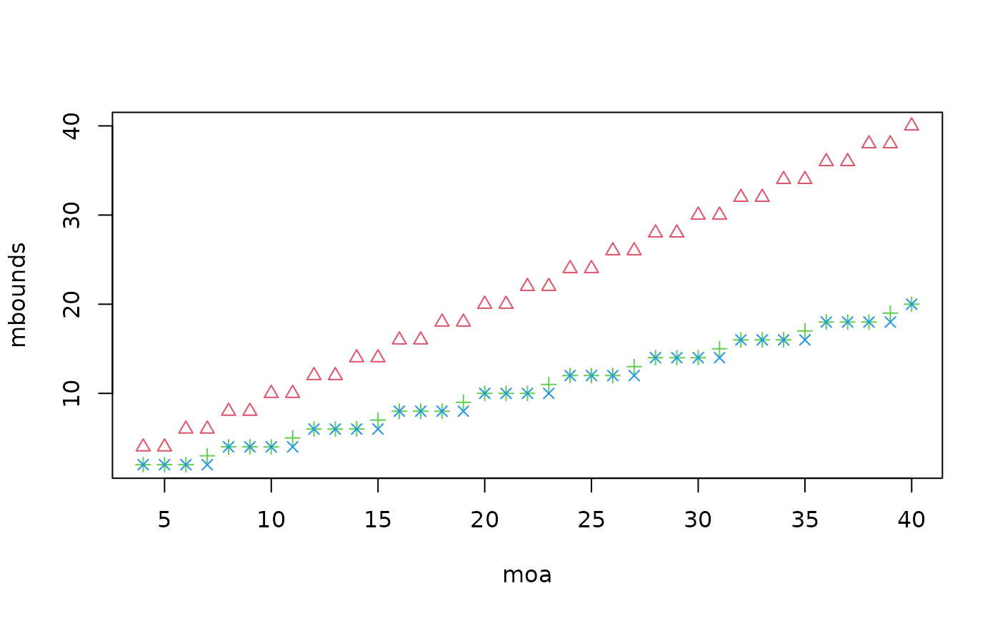

bound for number of columns for LiuLiu OSOAs
mbound_LiuLiu(moa, t)number of oa columns
strength used in the construction in function OSOAs_LiuLiu
(it is assumed that the oa used has at least that strength)
the maximum number of columns that can be obtained by the command
OSOAs_LiuLiu(oa, t=t) where oa has at least strength t and
consists of moa columns
## moa is the number of columns of an oa
moa <- rep(seq(4,40),3)
## t is the strength used in the construction
## the oa must have at least this strength
t <- rep(2:4, each=37)
## numbers of columns for the combination
mbounds <- mapply(mbound_LiuLiu, moa, t)
## depending on the number of levels
## the number of runs can be excessive
## for larger values of moa with larger t!
## t=3 and t=4 have the same number of columns, except for moa=4*j+3
plot(moa, mbounds, pch=t, col=t)
